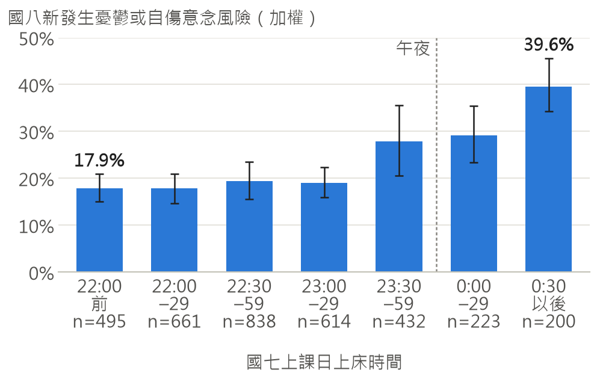
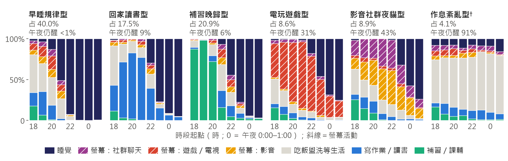
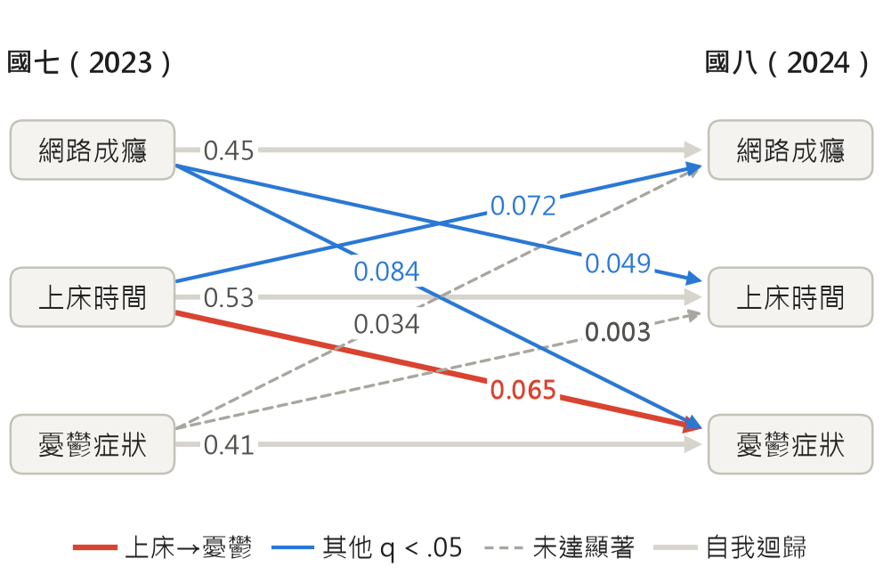
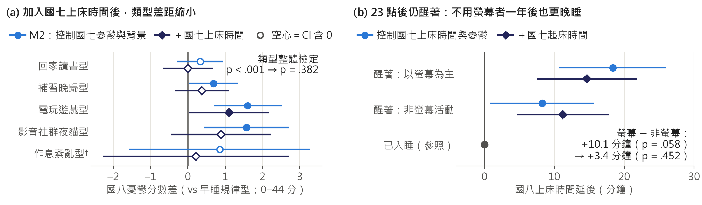
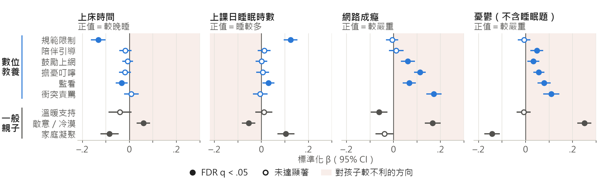

作品主題（title）
It's the Sleep, Not the Screen: Late Nights, Internet Use, and Depressive Symptoms from Grade 7 to Grade 8 in Taiwan
國中生升上國八越睡越晚，憂鬱風險跟著螢幕還是晚睡走？本研究串接 TIGPS 兩波問卷 8,319 人，以潛在類別、交叉延宕、中介與預警模型檢驗。國七上床時間預測一年後憂鬱（β = 0.065），反向近乎零；控制上床時間後，晚間類型對憂鬱的整體檢定不再顯著，深夜醒著未用螢幕者一年後也較晚睡；家長規範與早睡的關聯一年前已存在；預警 AUC 約 0.72。結果屬前瞻關聯，提示介入可由「管螢幕」轉向「顧睡眠」。

研究問題 升上國八，上課日午夜（含）以後才睡的學生由 13.8% 增為 25.5%，接近兩倍（國七僅 A 卷學生作答此題）。在國七憂鬱未達門檻（CESD < 16）的學生中，0:30 以後才睡者一年後有 39.6% 出現高憂鬱症狀或自傷／死亡意念，22:00 前就寢者為 17.9%（加權、未調整；圖1）。在家長限制上網、學校討論手機管制之際，本研究要問：與青少年心理健康最相關的，是螢幕本身，還是常伴隨螢幕的「晚睡」？具體為：(Q1) 國七的晚上有哪些型態？(Q2) 晚睡與憂鬱誰預測誰？(Q3) 風險跟著「螢幕」還是「晚」走？網路成癮與錯失恐懼（FOMO）是否經由晚睡與憂鬱相連？(Q4) 數位教養與作息、成癮、憂鬱有何關聯？(Q5) 能否只用國七資料，提早一年找出需要關懷的學生？
研究動機 手機普及常被認為與青少年心理健康下滑有關（Twenge, 2017），但大樣本分析顯示數位使用與幸福感的平均關聯很小（Orben & Przybylski, 2019），而螢幕使用與較晚就寢、較短睡眠相關（Hale & Guan, 2015）。本資料的國七日誌中，23 點後仍醒著的學生占 23.7%：以螢幕為主者占全體 12.7%，只做作業、補習、家事等非螢幕活動者占 11.1%。若風險跟著「晚」而不是「螢幕」走，只管螢幕就找錯了開關；若寫作業、補習到深夜者也有同樣風險，作息就不只是家庭的事。答案關係到家長該優先管什麼、學校政策該看白天還是夜晚、輔導室能否提早找到學生；TIGPS 的逐時日誌與兩波追蹤正可回答。
2.1 資料與設計 資料為 TIGPS 第一波（國七，2023，D00262，n = 8,958）與第二波（國八，2024，D00268，n = 8,905）學生問卷（吳齊殷，2026a、2026b），以學生編號串接 8,319 人（保留率 92.9%；有權重者分屬 178 校）。原調查為兩階段分層叢集抽樣；描述與迴歸以國七權重 HOUWGT 加權，標準誤與 bootstrap 皆以學校為叢集。國七 A、B 卷以學校為單位分派（89 校 A 卷、90 校 B 卷），分派方式未載明，不能視為隨機子樣本：晚間日誌、上床時間與 FOMO 只在 A 卷，數位教養只在 B 卷。兩組學校國八上床時間幾乎相同（d = −0.009），但 A 卷學校國七憂鬱、成癮略高（d = 0.124、0.113）。課後自願補填另一卷者（非隨機）不進入 CLPM、中介與類型迴歸，但納入 LCA 分群、國七上床時間描述、圖1 與預警模型（限主卷作答者時結論一致，見 3.2）。
2.2 測量 憂鬱為兩波共同的 CESD 12 題（0–48，α = .938／.939；Eaton et al., 2004；Radloff, 1977），「高憂鬱症狀」指總分 ≥ 16，為慣用門檻而非經驗證的臨床切點；類型、CLPM、中介與教養分析改用不含睡眠題的 11 題版（0–44）以免與睡眠變項重疊，預警目標沿用 12 題門檻（去除睡眠題後結論一致）。自傷／死亡意念 2 題（「我想傷害自己」「我寧願自己已經死亡」，近 1–2 週任一題 ≥ 1 天）僅國八測量，屬寬鬆指標。上床時間為學生自填的上課日上床時刻；晚間日誌為國七上課日 18:00–02:00 每小時的主要活動（歸為 7 種狀態）；「深夜螢幕」指 23:00–02:00 主要或次要活動含螢幕。網路成癮 10 題（α = .916／.929）含「熬夜上網」題；另有 FOMO、數位教養六構面與一般親子關係三構面（見圖5）。
2.3 分析與檢驗邏輯（證偽式檢查） 資料屬觀察性，每項分析都搭配一個「結論若錯就會露出破綻」的檢驗；多重比較依檢定家族分別以 BH-FDR 校正（q 值；Benjamini & Hochberg, 1995）。
技術細節 關聯分析採完整個案分析（資料不完整者國七憂鬱較高，若有偏誤，關聯較可能被低估）。LCA 為自行實作的 EM 演算法（200 組隨機起始值、不加權）；日誌全空白者排除，「睡覺」後的空白視為仍在睡，其餘 ≤ 2 格以相鄰時段補值；穩定度為學校叢集 bootstrap 60 次、每次以 30 組起始值重擬。CLPM 為每個國八變項對三個國七變項與共變項的 WLS 路徑迴歸（HOUWGT 權重；飽和，df = 0），以加權 SD 完全標準化，另以 semopy 做巢套模型比較；中介與 CLPM 的 bootstrap 為 2,000 次、依數位發展區分層重抽學校。預警的邏輯斯迴歸以中位數插補＋遺漏指標，HGB 原生處理遺漏（最終設定：學習率 0.03、深度 3、300 次迭代、葉節點 ≥ 80）；CI 為學校叢集 bootstrap 1,000 次。
2.4 工具與可重現性 程式碼：https://github.com/data/raw/）。Python 3.12.10：pandas、numpy、statsmodels（WLS、GLM）、scikit-learn、scipy、kmodes、semopy（SEM）、shap、pyreadstat（讀 SPSS 檔）、matplotlib；隨機種子 20261019（腳本 02、03、05）與 2026（腳本 04），套件版本固定於 requirements.txt。src/tigps/data.py 處理讀檔、遺漏碼、計分（作答 ≥ 80%）、上床時間 12／24 小時制校正與串接；scripts/ 依序為 01_eda、02_evening_typology、03_sleep_mediation（含 CLPM）、04_digital_parenting、05_risk_prediction、06_report_figures（繪圖並重算圖4a 各型 CI）、07_build_report（輸出本 PDF）。
3.1 國七的六種晚上（圖2） LCA 選出 k = 6（entropy R² = 0.88；bootstrap 平均 ARI = 0.87，各類 Jaccard 0.81–0.93，皆高於 Hennig 的 0.75 穩定準則）：早睡規律型 40.0%、回家讀書型 17.5%、補習晚歸型 20.9%、電玩遊戲型 8.6%、影音社群夜貓型 8.9%、作息紊亂型 4.1%。兩種螢幕晚睡型合計 17.5%，但其中午夜仍醒著者僅 31%–43%。所有方法與 k 的平均輪廓係數僅 0.10–0.21（k = 6 的 LCA 為 0.21，低於 0.25 的參考值；Kaufman & Rousseeuw, 1990），故類型宜視為連續光譜的精簡切分，而非自然族群。


3.2 晚睡預測一年後憂鬱，反之則否（圖1、圖3） 圖1 的新發生風險在 23:30 前約 18%–19%，之後逐段升至 39.6%；控制國七憂鬱與性別後，上床時間每延後 1 SD，OR = 1.19 [1.07, 1.31]（限主卷作答者 1.19、去除 CESD 睡眠題 1.18），再控制成癮、自尊等後仍為 1.12 [1.02, 1.24]。此複合結果的新發生個案中有 53.2% 僅因寬鬆的自傷／死亡意念題列入，但改用不含自傷題的連續憂鬱分數方向相同：另以迴歸（控制國七憂鬱與背景，n = 3,773）估計，國七上床時間每延後 1 小時，一年後憂鬱高 0.60 分 [0.32, 0.87]（0–44 分）。CLPM（n = 3,654；圖3）中，國七上床時間預測國八憂鬱（β = 0.065，95% CI [0.031, 0.096]，q < .001），反向幾乎為零（β = 0.003 [−0.030, 0.038]，q = .840），兩者差 +0.062 [0.019, 0.106]（p = .005）。穩健性：以睡眠時數取代上床時間方向一致但較弱（差 +0.049，p = .085）；納入課後補填者交叉係數不變（0.065）；巢套比較中 BIC 偏好保留「上床時間 →」路徑（拿掉時 ΔBIC = +14.5）、拿掉「憂鬱 →」路徑（ΔBIC = −9.0）。
3.3 轉折：訊號跟著「晚」走，螢幕的額外關聯測不到（圖4） 控制國七憂鬱後（M2），兩種螢幕晚睡型一年後憂鬱比早睡規律型高 1.58 分 [0.82, 2.34]，乍看支持「螢幕有害」。但在有國七上床時間的子樣本（n = 3,773）加入上床時間後，類型對國八憂鬱的整體檢定由 p < .001 變為 p = .382（ΔR² = 0.0016；圖4a）；反之加入類型後，上床時間仍顯著（每小時 +0.47 分 [0.11, 0.84]，p = .010；ΔR² = 0.0026）——兩者資訊大量重疊，只占 1 個自由度的上床時間較精簡（電玩遊戲型仍有 1.10 分 [0.04, 2.16]，未校正多重比較）。上床時間與深夜螢幕同時放入時，前者仍顯著（每小時 +0.50 分 [0.17, 0.83]，p = .003），後者 CI 寬（+0.60 分 [−0.17, 1.38]，p = .127）。日誌對照（圖4b）中，相對於 23 點已入睡者，以螢幕為主者一年後晚睡 18.4 分鐘 [10.7, 26.0]，只做非螢幕活動者也晚 8.2 分鐘 [0.8, 15.7]；回家讀書型、補習晚歸型也比早睡規律型晚睡約 12–14 分鐘（控制國七上床時間）。螢幕與非螢幕之差 10.1 分鐘（p = .058；bootstrap CI [0.7, 20.5] 勉強排除 0）並不穩健：再控制起床時間後只剩 3.4 分鐘（p = .452），納入補填者時間接關聯之差的 CI 也含 0。

3.4 成癮與晚睡互相預測，經由睡眠的部分卻很小 網路成癮與上床時間雙向預測（成癮→上床時間 β = 0.049 [0.016, 0.083]；上床時間→成癮 β = 0.072 [0.041, 0.104]；q ≤ .013；圖3），沒有主導方向。CLPM 中最大的交叉係數是成癮→憂鬱（β = 0.084 [0.044, 0.122]，q < .001；與反向之差 p = .101），而「成癮 → 晚睡 → 憂鬱」的間接關聯（統計上的路徑分解，非因果）只占成癮與一年後憂鬱關聯的 4%（時序版）至 12%（同期版）。換言之，控制晚睡後消失的是「深夜用螢幕」的額外訊號，而非失控使用本身。FOMO 與國八憂鬱的關聯也幾乎不經由睡眠（間接 β = 0.0029，q = .389；直接 β = 0.065，p < .001），在預警的多變項模型中則被成癮、自尊等變項吸收（OR = 1.04，p = .392）。
3.5 家長：規則只伴隨早睡，親子關係與憂鬱關聯最強（圖5） 規範限制與較早睡相關（β = −0.133，約每 1 SD 早睡 9 分鐘），與成癮、憂鬱則無顯著關聯（β = −0.005、−0.006）；但在同一 A 卷樣本（n = 3,923）中，國八規範與「一年前」國七上床時間的關聯，和與國八上床時間的同期關聯一樣強（皆 β = −0.130；時序負對照），可見關聯一年前就已存在，較可能反映家庭間的穩定差異。衝突責罵伴隨較高的成癮（β = 0.172）與憂鬱（β = 0.110），但前瞻證據弱、方向未定；擔憂叮嚀、監看與成癮、憂鬱的正相關方向亦未定（交叉延宕未見子→親路徑）。與憂鬱最相關的是一般親子關係（敵意／冷漠 β = 0.250、家庭凝聚 β = −0.143）：憂鬱 R² 由 0.037（只有背景）升至 0.142（加入一般親子關係），再加六種數位教養僅到 0.159。反向來看，國七憂鬱症狀較高的孩子一年後家長規範較少（β = −0.036 [−0.063, −0.010]，q = .028）；FDR 校正後，也沒有任何教養構面減弱「成癮 → 憂鬱」的關聯。

3.6 提前一年預警（表1） 梯度提升樹（AUC = 0.720）、隨機森林（0.722）與邏輯斯迴歸（0.718）幾乎相同（HGB − 邏輯斯 ΔAUC = +0.002 [−0.005, 0.008]）：機器學習並未勝過可解釋的線性模型，但皆優於只看國七憂鬱分數（0.671）。10 題篩檢（題目見表1註）AUC = 0.706。標記預測風險最高的 15% 學生，可找出 32.5% 的新發生個案，陽性預測值（PPV）為 46.3%（約為盛行率 21.4% 的 2.2 倍）。若結果改為只看國八 CESD ≥ 16，HGB 為 0.726、邏輯斯為 0.734，機器學習仍未勝過線性模型。
| 模型 | 特徵數 | ROC-AUC [95% CI] | PR-AUC | 前 15% 敏感度 | 前 15% PPV |
|---|---|---|---|---|---|
| 只看國七憂鬱分數（CESD） | 1 | 0.671 [0.653, 0.687] | 0.358 | 30.5% | 43.2% |
| 邏輯斯迴歸（L2） | 83 | 0.718 [0.703, 0.734] | 0.412 | 32.9% | 46.9% |
| 梯度提升樹（HGB） | 83 | 0.720 [0.704, 0.735] | 0.407 | 32.5% | 46.3% |
| 隨機森林 | 83 | 0.722 [0.706, 0.738] | 0.404 | 32.4% | 46.2% |
| 10 題簡短篩檢（邏輯斯） | 10 | 0.706 [0.689, 0.724] | 0.388 | 31.7% | 45.1% |
| 註：對象為國七 CESD < 16 者；結果＝國八 CESD ≥ 16 或近 1–2 週自傷／死亡意念（加權盛行率 21.4%，即 PR-AUC 與 PPV 的隨機基準）。5 折「以學校分組」交叉驗證之樣本外預測，HOUWGT 加權；95% CI 為學校叢集 bootstrap。「前 15%」＝標記預測風險最高的 15% 學生。10 題（全樣本選題順序；交叉驗證時於各外折內另選）：滿意自己、覺得悲傷、無法上網就坐立不安、總是感到疲憊、覺得很寂寞、曾遭實體霸凌、女生、自評健康、睡眠情況不好、學校生活滿意。ΔAUC：隨機森林 − HGB +0.002 [−0.003, +0.007]；10 題篩檢 − 只看 CESD +0.036 [+0.022, +0.050]。 | |||||
4.1 結果的意義 CLPM 的方向不對稱顯示晚睡較可能走在憂鬱之前，而非反之。至於「螢幕還是晚」，雙向巢套檢定、深夜螢幕與上床時間同時放入、日誌對照三條方法不同、各有弱點的證據都指向訊號跟著「晚」走；預警分析中「23 點後以螢幕為主」與「午夜仍醒著」的關聯也幾乎相同（OR = 1.77、1.74）。但再控制上床時間檢驗的只是螢幕在「晚」之外是否另有關聯；若深夜螢幕會把上床時間往後推，它的部分關聯本就會落在上床時間上。因此結論是「未偵測到螢幕在晚睡之外的額外關聯」，而非「螢幕無害」：深夜醒著者約一半在用螢幕，兩者交纏，CI 也寬，不能排除中等大小的螢幕效果。螢幕較像深夜醒著時的常見伴隨物——這正是「關掉的不是螢幕，是睡眠」之意。這也不表示上網無關：網路成癮本身預測一年後憂鬱且多不經由睡眠，又與晚睡互相預測，宜與睡眠一併處理。效果量小（CLPM 交叉 β 0.05–0.08），屬群體層級的預測性關聯，不保證個人調整作息就有同等效果。
4.2 應用：從「管螢幕時數」到「顧就寢時間」 (1) 家庭：把「幾點關燈」放在「用多久」之前；睡前把手機留在房外是低成本作法，但本研究未直接檢驗。規範限制只與早睡相關，衝突責罵則伴隨較高的成癮與憂鬱；宜避免以責罵處理上網衝突，並經營溫暖、低敵意的親子關係，已出現失控使用者則與睡眠一併處理。國七憂鬱症狀較高的孩子一年後家長規範反而較少，輔導人員可主動支持家長。(2) 學校與政策：校園手機管制多針對白天，訊號卻出現在放學後的深夜；讀書、補習型學生一年後也較晚睡，「非螢幕熬夜」也應納入；到校時間、作業量與補習時段的調整值得以試辦計畫評估。(3) 輔導：10 題篩檢只能排定關懷順序，不能用於診斷或貼標籤，施測須經知情同意、保密並銜接轉介流程；前 15% 仍漏掉約三分之二的新發生個案，被標記者一年後也只有 46.3% 符合結果定義，只能補充、不能取代全面的心理健康促進。
4.3 異常與模型表現 作息紊亂型日誌多整晚未睡，卻有 62% 自填午夜前就寢，疑為作答品質問題。陪伴引導控制一般親子關係後與憂鬱轉為正相關（β = 0.048），較可能是正向作用已被一般親子關係涵蓋，而非有害。HGB 移除晚睡特徵後 AUC 未下降（0.723 → 0.725，p = .296），可能是資訊已被相關特徵涵蓋，不能據此說晚睡不重要；但把上床時間、23 點後螢幕與午夜仍醒著加入 10 題篩檢，AUC 仍有小幅增益（+0.006，p = .024）。邏輯斯迴歸機率需再校準（斜率 1.27）；門檻也是政策選擇：統一取前 15% 時男生敏感度僅 19.8%（女生 41.6%），性別內各取前 15% 可拉近兩性，但整體敏感度降為 30.7%。
4.4 研究限制 (1) 只有兩波，無法估計 RI-CLPM（Hamaker et al., 2015），交叉係數混合個人間與個人內差異；中介的 b 路徑為同期測量。(2) 可能有未測混淆：上床時間與網路成癮對國八高憂鬱的 E-value 約 1.44–1.49，穩健性偏弱至中等。(3) A 卷只代表 89 校，國七基線憂鬱、成癮略高，且其 CESD 緊接睡眠與日誌題組，可能有題序效果。(4) 皆為學生自陳：同期教養與憂鬱有共同方法變異，上床時間為單題、有測量誤差，成癮量表含熬夜題，日誌只代表典型一晚、不分螢幕內容。(5) CESD ≥ 16 為慣用門檻；自傷意念國七未測，「新發生」只表示國七未達憂鬱門檻。(6) 數位教養構面 CFA 配適不佳（RMSEA = .110），教養主分析為同期。(7) 晚睡類型流失較多、權重未針對流失校正，差距較可能低估。(8) 效果量小：螢幕晚睡型差距約 0.17–0.19 SD。(9) 預警模型未做外部驗證。
創新性 把「螢幕有沒有害」改寫成可檢驗的「時間點問題」：(1) 以逐小時日誌取代單一螢幕時數，「醒著但只做非螢幕活動」的學生提供內建對照，分開「幾點」與「做什麼」；(2) 以前測控制、方向不對稱、雙向巢套檢定、時序負對照與對撞因子考量串成證據鏈；(3) 以學校分組交叉驗證公平比較機器學習與邏輯斯迴歸，並從 61 個共同題選出 10 題篩檢（AUC 0.706，僅比 HGB 低 0.013）。焦點從「螢幕時數」移到「就寢時間」與「失控使用」。
延展性 TIGPS 後續波次可估計 RI-CLPM，檢驗個人內「比平常晚睡 → 情緒變差」；穿戴裝置與手機使用紀錄可取代自填並區分螢幕內容；「日誌 → 類型 → 負對照 → 篩檢」流程可移植到其他追蹤調查、時段（補習、通勤）與結果（學業、健康）；延後到校或夜間手機收納等學校方案，也可用叢集隨機試驗評估。
資料採自中央研究院人文社會科學研究中心調查研究專題中心學術調查研究資料庫（SRDA）釋出之「臺灣數位世代青少年的成長歷程追蹤研究」第一、二波學生問卷（吳齊殷，2026a、2026b）；該計畫由中央研究院社會學研究所執行、國家科學及技術委員會補助，謹致謝忱。分析與詮釋概由作者自行負責，與上述單位無關。本作品非由學位論文改寫。本研究之程式撰寫與文字潤飾曾使用生成式 AI 工具（Claude）輔助，研究設計、分析結果之判讀與最終內容由作者負責確認。
吳齊殷（2026a）。臺灣數位世代青少年的成長歷程追蹤研究：2023 第一波（wave1）（D00262）【原始數據】。取自中央研究院人文社會科學研究中心調查研究專題中心學術調查研究資料庫。https://doi.org/10.6141/TW-SRDA-D00262-2
吳齊殷（2026b）。臺灣數位世代青少年的成長歷程追蹤研究：2024 第二波（wave2）（D00268）【原始數據】。取自中央研究院人文社會科學研究中心調查研究專題中心學術調查研究資料庫。https://doi.org/10.6141/TW-SRDA-D00268-1
Benjamini, Y., & Hochberg, Y. (1995). Controlling the false discovery rate: A practical and powerful approach to multiple testing. Journal of the Royal Statistical Society: Series B (Methodological), 57(1), 289–300. https://doi.org/10.1111/j.2517-6161.1995.tb02031.x
Cole, D. A., & Maxwell, S. E. (2003). Testing mediational models with longitudinal data: Questions and tips in the use of structural equation modeling. Journal of Abnormal Psychology, 112(4), 558–577. https://doi.org/10.1037/0021-843X.112.4.558
Eaton, W. W., Smith, C., Ybarra, M., Muntaner, C., & Tien, A. (2004). Center for Epidemiologic Studies Depression Scale: Review and revision (CESD and CESD-R). In M. E. Maruish (Ed.), The use of psychological testing for treatment planning and outcomes assessment: Vol. 3. Instruments for adults (3rd ed., pp. 363–377). Lawrence Erlbaum Associates.
Hale, L., & Guan, S. (2015). Screen time and sleep among school-aged children and adolescents: A systematic literature review. Sleep Medicine Reviews, 21, 50–58. https://doi.org/10.1016/j.smrv.2014.07.007
Hamaker, E. L., Kuiper, R. M., & Grasman, R. P. P. P. (2015). A critique of the cross-lagged panel model. Psychological Methods, 20(1), 102–116. https://doi.org/10.1037/a0038889
Hennig, C. (2007). Cluster-wise assessment of cluster stability. Computational Statistics & Data Analysis, 52(1), 258–271. https://doi.org/10.1016/j.csda.2006.11.025
Kaufman, L., & Rousseeuw, P. J. (1990). Finding groups in data: An introduction to cluster analysis. Wiley. https://doi.org/10.1002/9780470316801
Livingstone, S., & Helsper, E. J. (2008). Parental mediation of children's internet use. Journal of Broadcasting & Electronic Media, 52(4), 581–599. https://doi.org/10.1080/08838150802437396
Lundberg, S. M., & Lee, S.-I. (2017). A unified approach to interpreting model predictions. In I. Guyon, U. V. Luxburg, S. Bengio, H. Wallach, R. Fergus, S. Vishwanathan, & R. Garnett (Eds.), Advances in neural information processing systems 30 (pp. 4765–4774). Curran Associates. https://proceedings.neurips.cc/paper/2017/hash/8a20a8621978632d76c43dfd28b67767-Abstract.html
Orben, A., & Przybylski, A. K. (2019). The association between adolescent well-being and digital technology use. Nature Human Behaviour, 3(2), 173–182. https://doi.org/10.1038/s41562-018-0506-1
Radloff, L. S. (1977). The CES-D Scale: A self-report depression scale for research in the general population. Applied Psychological Measurement, 1(3), 385–401. https://doi.org/10.1177/014662167700100306
Twenge, J. M. (2017). iGen: Why today's super-connected kids are growing up less rebellious, more tolerant, less happy—and completely unprepared for adulthood—and what that means for the rest of us. Atria Books.
VanderWeele, T. J., & Ding, P. (2017). Sensitivity analysis in observational research: Introducing the E-value. Annals of Internal Medicine, 167(4), 268–274. https://doi.org/10.7326/M16-2607